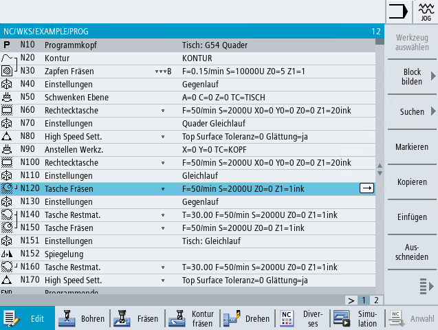
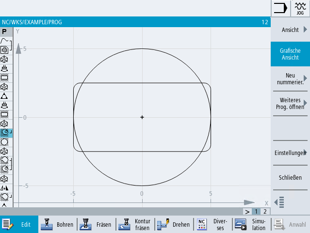

Ein ShopMill-Programm können Sie in verschiedenen Ansichten darstellen:
-
Arbeitsplan
-
Grafische Ansicht
-
Parametermaske wahlweise mit Hilfebild oder grafischer Ansicht
| Hinweis |
Hilfebilder / AnimationenBitte beachten Sie, dass bei Hilfebildern und Animationen der Zyklenunterstützung nicht alle denkbaren Kinematiken dargestellt werden können. |
Arbeitsplan
Der Arbeitsplan im Editor gibt einen Überblick über die einzelnen Bearbeitungsschritte eines Programms.
Arbeitsplan eines ShopMill-Programms
| Hinweis |
In den Einstellungen des Programmeditors legen Sie fest, ob die Bearbeitungszeiten erfasst werden. |
Darstellung der Bearbeitungszeiten
Hervorhebung ausgewählter G-Code-Befehle oder Schlüsselwörter
In den Einstellungen des Programmeditors legen Sie fest, ob ausgewählte G-Code-Befehle farblich hervorgehoben werden. Standardmäßig werden dann folgende Farbkodierungen genutzt:
| | Maschinenhersteller In der Konfigurationsdatei "sleditorwidget.ini" haben Sie die Möglichkeit, weitere Hervorhebungen zu definieren. Beachten Sie hierzu bitte die Angaben des Maschinenherstellers. |
Synchronisation von Programmen an Mehrkanalmaschinen
An mehrkanaligen Maschinen werden spezielle Befehle (z. B. GET und RELEASE) verwendet, um die Programme untereinander zu synchronisieren. Diese Befehle werden durch ein Uhrensymbol hervorgehoben.
Wenn die Programme mehrerer Kanäle angezeigt werden, werden zusammengehörige Befehle in einer Zeile dargestellt.
Darstellung | Bedeutung |
|---|---|
Synchronisationsbefehl |
| Hinweis |
Umschalten zwischen Hilfebild und grafischer AnsichtFür den Wechsel zwischen Hilfebild und grafischer Ansicht steht zusätzlich die Tastenkombination <CTRL> + <G> zur Verfügung. |
Grafische Ansicht
Die grafische Ansicht zeigt die Kontur des Werkstücks als dynamische Strichgrafik. Der im Arbeitsplan markierte Programmsatz ist in der grafischen Ansicht farbig hervorgehoben.
Grafische Ansicht eines ShopMill-Programms
Parametermaske mit Hilfebild
| | Drücken Sie die Taste <Cursor rechts>, um im Arbeitsplan einen selektierten Programmsatz bzw. Zyklus zu öffnen. Die jeweils zugehörige Parametermaske mit Hilfebild wird aufgeblendet. |
Parametermaske mit Hilfebild
Die animierten Hilfebilder werden immer lagerichtig zum eingestellten Koordinatensystem angezeigt. Die Parameter werden dynamisch in die Grafik eingeblendet. Der angewählte Parameter wird in der Grafik hervorgehoben.
Die farbigen Symbole
Roter Pfeil = Werkzeug fährt im Eilgang
Grüner Pfeil = Werkzeug fährt im Bearbeitungsvorschub
Parametermaske mit grafischer Ansicht
Mit dem Softkey "Grafische Ansicht" schalten Sie in der Maske zwischen Hilfebild und grafischer Ansicht um. |
| Hinweis |
Umschalten zwischen Hilfebild und grafischer AnsichtFür den Wechsel zwischen Hilfebild und grafischer Ansicht steht zusätzlich die Tastenkombination <CTRL> + <G> zur Verfügung. |
Parametermaske mit grafischer Ansicht